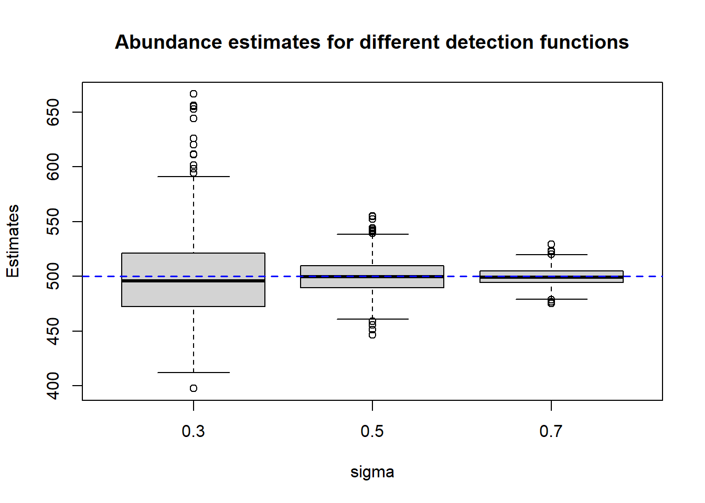

Chapter 6 Mark Recapture Distance Sampling
6.1 Introduction
Mark Recapture Distance Sampling (MRDS) combines the principles of mark-recapture and standard distance sampling. 2 observers each travel along the same transect and record the animals they see and the perpendicular distance. By including the capture history of each animal we have enough information to allow for non-zero detection probability on the line, but we lose the pooling robustness property, so unmodelled heterogeneity will cause biased estimates. This model also assumes that the observers perfectly match which animals they both saw and which ones only one observer saw. If the animals don’t have uniquely identifying features and there is any kind of animal movement then this assumption will not hold. We explore the impact of violating the perfect matching assumption in this simulation.
6.2 Simulation
To see the affect of imperfect matching, we simulated 200 animals with a uniform distribution across the study area and simulated an observer detecting animals with a hazard rate detection function with sigma = 0.8, beta = 6. We then had the animals move away in response to the observer with three levels of avoidance, and simulated the second observer detecting the animals in their new positions with the same detection function as the first observer.
avoidance_demo(Nanimals, 1)Figure 6.1: Demonstration of different avoidance levels
To account for the imperfect matching we set that any animals detected on the second occasion within 0.1 of an animal detected on the first animal were recorded as the same animal, taking the closest as the match if there were multiple within this range. Any animals further than 0.5 were recorded as different, and generated the probability of matching animals within the range using a hazard rate with parameters 0.15, 2.5.
x <- seq(match_limits[1],match_limits[2],0.01)
plot(x, hazard_rate(x-match_limits[1],match_param[1],match_param[2]), xlab = "Distance from 1st animal", ylab = "Probability of Match", main = "Match Probability", type = "l")
Explain bias results Bias plot